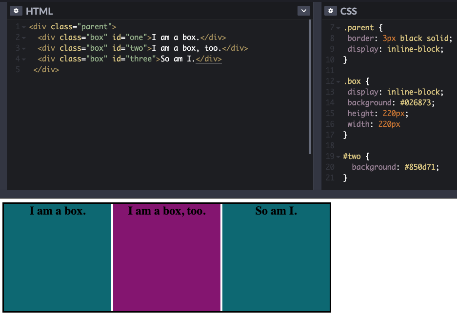
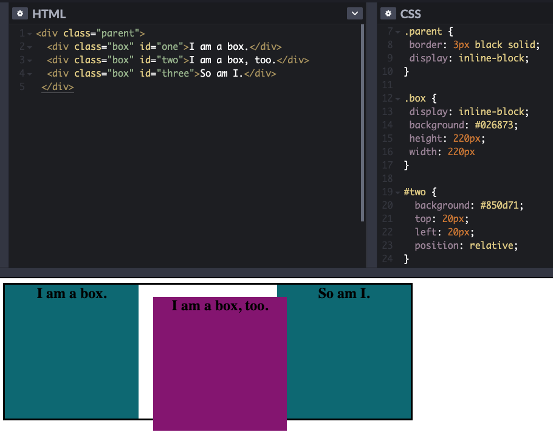
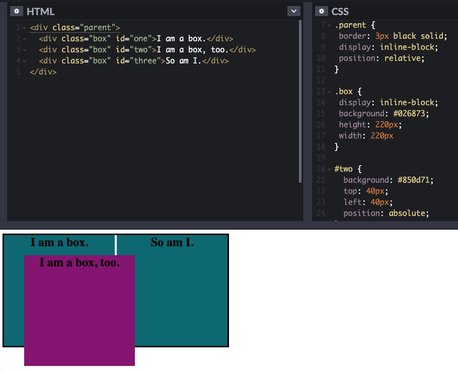

What are the differences between relative, absolute, and fixed positionings?
I spent a while to understand the differences between absolute and relative positioning. My elements often seemed to be
all over the place, so it was obvious to me to pick this topic and do some further research. Here is what I found out:
The position property
The position property helps us, to manipulate the location of an element.
Every element sits in a rectangular box and with positioning schemes you can define where a box will sit in the
overall page layout and how each box affects the others around it.
The position property can take 6 values:
position: static
position: relative
position: absolute
position: fixed
position: inherit
position: sticky
I will cover the first 4 in more detail.
Position: static
Every element has a static position by default. That means that it will stick to the normal page flow.
The rules for where it sits and how it affects other boxes are defined by the
box model.
A statically positioned element will ignore any values for properties like top, right, bottom and left,
as well as any z-index* declarations.
In order to use any of these properties your element must have absolute, relative or fixed positioning applied.
* z-index: The 3rd dimension added to a page that sets the stack order of elements.

Fig. 1 - Positioning: static
You can see in the picture that we haven't set any position property. By default, the position is set to static
and it positions based on the layout in the flow. I set the display property to inline-block, so the boxes
align horizontally ( they would align vertically otherwise ). So, what happens when we want to move the
pink box but do not want to affect the layout around it?
Position: relative
Just like with the static value, the element's original position remains in the flow of the docuemnt.
But now the values for left, right, top, bottom and z-index properties will actually work. With these properties set to
certain values, you can shift the elements from where they would normally sit.
The elements around a relatively positioned element totally ignore this shift and stay in their original position as if
the positioned element is still in the normal flow. Only the relatively positioned element moves around ( like a ghost ).
This allows elements to overlap each other.

Fig. 2 - Positioning: relative
Ok, what happens now when we want to move the pink box but do not want to affect the layout around it?
This is where position relative comes in. We have moved the pink pox 20px from the left and top without changing
the layout around it. You can see, that the pink box is leaving a gap in it's old position.
Position: absolute
Absolutely positioned elements are completely removed from the normal document flow. The elements around absolutely
positioned elements treat it as if it doesn't exist.
You can set the location of an absolutely positioned element through the top, right, bottom and left properties.
However, you usually define only two of these ( top or bottom and left or right ).
The key to understanding absolute positioning is understanding where it's origin is. If you set the top property to 10px,
you should ask yourself "10px from the top from where?".
An absolutely positioned element is positioned relative to it's first parent element that has a position other than static applied.
If there is no such parent, it will default all the way back up to the '' element itself. You can find it in the outermost
edge of the browser window.
Again: When you set a position: absolute on an element, you should always have a look at it's parent element, too. If it also has
positioning ( other than static ) applied, the origin for the the absolutely positioned elements is the top, left corner of the
parent element. If all parent elements are static, look for the absolute positioned element at the top left corner of your
browser window.

Fig. 3 - Positioning: absolute
By applying position: absolute to the pink box, it will jump out of the document flow without leaving any gap in
it's old position. The other sibling elements behave as if the pink box isn't there. The position of the pink box
is based on it's parent position ( the black border ) which is set to the relative value. Thus, moving 40px to the right
and bottom from the top-left origin of the black border.
Position: fixed
Position fixed is the easiest to explain. A position: fixed element will be stuck in place no matter how far the body
extends. It is always positioned relative to the browser window ( viewport ) and takes the top, right, bottom and left
properties. It is the rebel of all positioning properties and ignores it's parents.
The viewport doesn't change when the window is scrolled, so a fixed positioned element will stay where it is when
the page is scrolled.
It is commonly used for the navigation bar and/or the footer.
You can see in the short video, that the pink box stays in it's position while the page is scrolled.